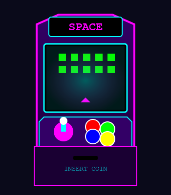

RetroGaming Arcade
I nostri giochi
Al RetroGaming Arcade puoi giocare ai classici intramontabili su cabinati arcade originali perfettamente restaurati.

- Pac-Man (1980)
- Space Invaders (1978)
- Donkey Kong (1981)
- Street Fighter II (1991)
- Tetris (1984)
Console disponibili
- Nintendo NES e SNES
- Sega Mega Drive
- PlayStation 1
- Game Boy (area portatili)
Tutti i giochi sono inclusi nel prezzo d'ingresso. Gettoni illimitati!